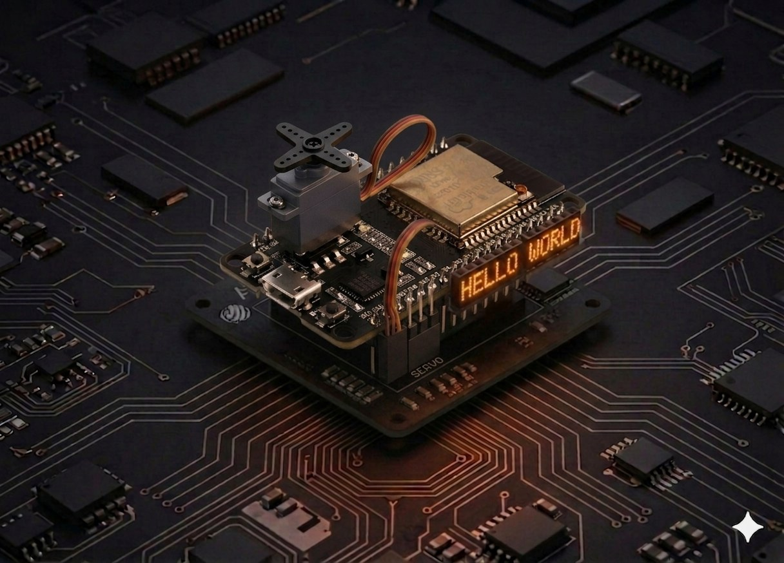

Servomotor
Comandă un servomotor SG90 între 0° și 180° cu ESP32, prin PWM la 50 Hz — primul pas către brațe robotizate și direcție pentru mașinuțe.
Servomotor¶
Un servomotor este un motor mic cu angrenaje care se oprește la un unghi precis — exact ce ai nevoie pentru un braț robotizat, direcția unei mașinuțe sau un capac care se deschide singur. Aici îl comandăm de pe ESP32, în MicroPython, prin PWM la 50 Hz.

Descriere¶
Un servo „de hobby" (SG90, MG90, SG5010) așteaptă un puls scurt repetat la fiecare 20 ms pe firul de semnal. Lungimea pulsului decide unghiul:
- ~0,5 ms → 0°
- ~1,5 ms → 90° (centru)
- ~2,4 ms → 180°
Pe ESP32 nu există o bibliotecă „Servo" încorporată ca pe Arduino — folosim direct machine.PWM la 50 Hz și calculăm duty în funcție de unghi. La rezoluție de 10 biți (0–1023), un puls de 1 ms revine la duty ≈ 51, iar unul de 2 ms la duty ≈ 102.
Componente¶
| Component | Cantitate |
|---|---|
| Placă ESP32 (DevKit V1) | 1 |
| Servomotor SG90 (9 g) | 1 |
| Fire jumper M-M | 3 |
| Sursă externă 5 V (recomandat pentru 2+ servo) | după caz |
Specificații SG90¶
- Tensiune de lucru: 4,8 – 6 V
- Cuplu: ~1,6 kg·cm la 4,8 V
- Viteză: ~0,12 s / 60°
Conectare¶
| Fir servo | Culoare | ESP32 |
|---|---|---|
| GND (−) | maro / negru | GND |
| V+ | roșu | Vin / 5V (vezi nota) |
| Semnal | portocaliu / galben | GPIO 13 |
ESP32 Servo SG90
GPIO 13 ──── portocaliu ── Semnal
5V / Vin ── roșu ── Putere (+)
GND ────── maro ── Masă (−)
Alimentarea servo-ului
SG90 vrea 5 V. Pinul 3.3V al ESP32 nu e suficient — la mișcare cuplul scade vizibil și placa se poate reseta din cauza vârfurilor de curent. Folosește pinul Vin (= 5 V când placa e alimentată prin USB) pentru un singur servo, sau o sursă externă 5 V cu masa comună cu ESP32 pentru 2 sau mai multe servo-uri. Niciodată nu alimenta servo-ul direct din 3.3V.
Cod¶
from machine import Pin, PWM
import time
# --- Configurare ---
SERVO_PIN = 13
FREQ = 50 # 50 Hz = perioadă 20 ms (cerută de servo)
# Duty pentru SG90 la rezoluție 10 biți:
# 0° → puls 0,5 ms → duty ≈ 26
# 90° → puls 1,5 ms → duty ≈ 77
# 180° → puls 2,4 ms → duty ≈ 123
DUTY_MIN = 26
DUTY_MAX = 123
servo = PWM(Pin(SERVO_PIN), freq=FREQ, duty=0)
def set_angle(angle):
"""Setează unghiul servo-ului între 0 și 180 grade."""
angle = max(0, min(180, angle)) # limitează
duty = DUTY_MIN + (DUTY_MAX - DUTY_MIN) * angle // 180
servo.duty(duty)
def sweep():
"""Baleiere lentă 0° → 180° → 0°."""
for a in range(0, 181, 2):
set_angle(a)
time.sleep_ms(15)
for a in range(180, -1, -2):
set_angle(a)
time.sleep_ms(15)
try:
while True:
sweep()
except KeyboardInterrupt:
set_angle(90) # parchează la centru
time.sleep_ms(500)
servo.deinit()
Rulează scriptul¶
- Conectează ESP32-ul prin USB.
- În Thonny, lipește codul și salvează-l ca
main.pype dispozitivul MicroPython. - Apasă Run (F5). Axul servo-ului trebuie să facă o baleiere lentă din 0° în 180° și înapoi.
Dacă servo-ul „țâșnește" și apoi se oprește brusc, vezi Probleme frecvente.
Calibrare¶
Servo-urile ieftine variază între bucăți — SG90-ul tău poate avea capete reale la 5°…175° în loc de 0°…180°. Dacă vezi că la angle=0 se aude un bâzâit (axul lovește capătul mecanic), ridică DUTY_MIN cu 2-3 unități. Dacă la angle=180 nu ajunge până la capăt, mărește DUTY_MAX.
# Testează capetele înainte să folosești sweep()
set_angle(0) # ar trebui să meargă lin la stânga
time.sleep(1)
set_angle(180) # apoi la dreapta
Exemplu: poziție de la consolă¶
Trimite un unghi din REPL-ul Thonny și servo-ul se duce direct acolo:
from machine import Pin, PWM
servo = PWM(Pin(13), freq=50)
DUTY_MIN, DUTY_MAX = 26, 123
def set_angle(a):
a = max(0, min(180, a))
servo.duty(DUTY_MIN + (DUTY_MAX - DUTY_MIN) * a // 180)
# În REPL: set_angle(45), set_angle(120), etc.
Probleme frecvente¶
Servo-ul tremură fără să primească comandă
- Vârfuri de curent. Asigură-te că alimentezi din Vin / 5V, nu din 3.3V.
- Adaugă un condensator de 100 µF între V+ și GND, lângă servo.
- Pentru 2+ servo-uri, folosește o sursă externă 5 V și conectează GND-ul ei cu GND-ul ESP32.
ESP32-ul se resetează când servo-ul începe să se miște
- Curentul de pornire al servo-ului trage tensiunea sub pragul de reset. Folosește alimentare externă, nu USB.
Axul lovește mecanic capătul (se aude un bâzâit)
- Comanzi un unghi în afara intervalului real. Vezi secțiunea Calibrare — restrânge
DUTY_MIN/DUTY_MAX.
Servo-ul se mișcă invers față de ce mă aștept
- Schimbă maparea: înlocuiește
anglecu180 - angleînset_angle().
OSError: invalid pin la PWM(Pin(...))
- Pinul ales nu poate face PWM (ex. GPIO 34–39 sunt input-only). Mută semnalul pe GPIO 13, 14, 25, 26, 27, 32, 33.
Idei de extindere¶
- Joystick → servo: citește un potențiometru pe GPIO 34 (ADC1) și mapează 0–4095 la 0–180°. Vezi Telecomanda robot pentru un exemplu complet de joystick pe ADC.
- Pan/tilt cu două servo-uri: un servo orizontal + unul vertical, montate pe un mic suport — bază pentru o cameră care urmărește un obiect.
- Brățara mecanică a robotului: combină cu LED-ul RGB ca să afișezi starea (verde = idle, roșu = în mișcare).
- Comandă wireless: trimite unghiul cu ESP-NOW de la o telecomandă — fără cabluri, fără Wi-Fi.